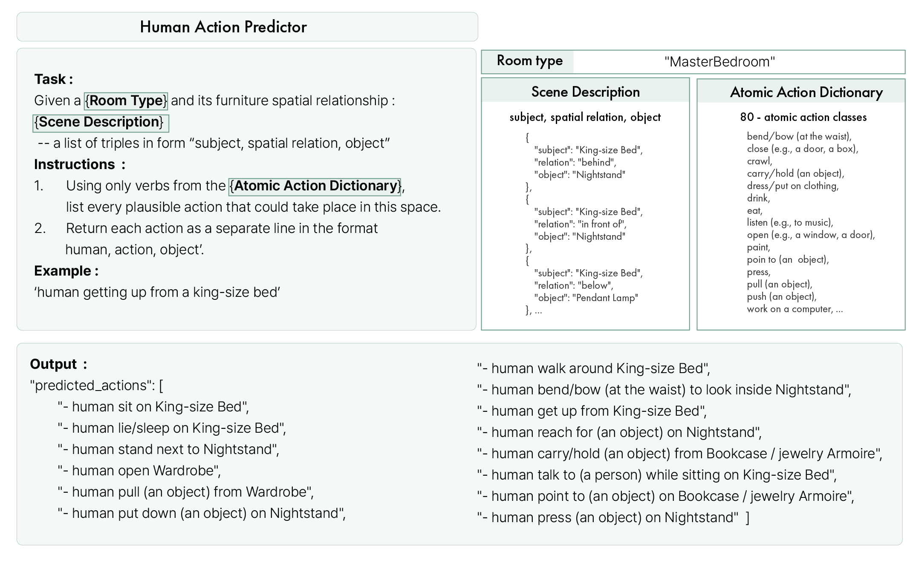
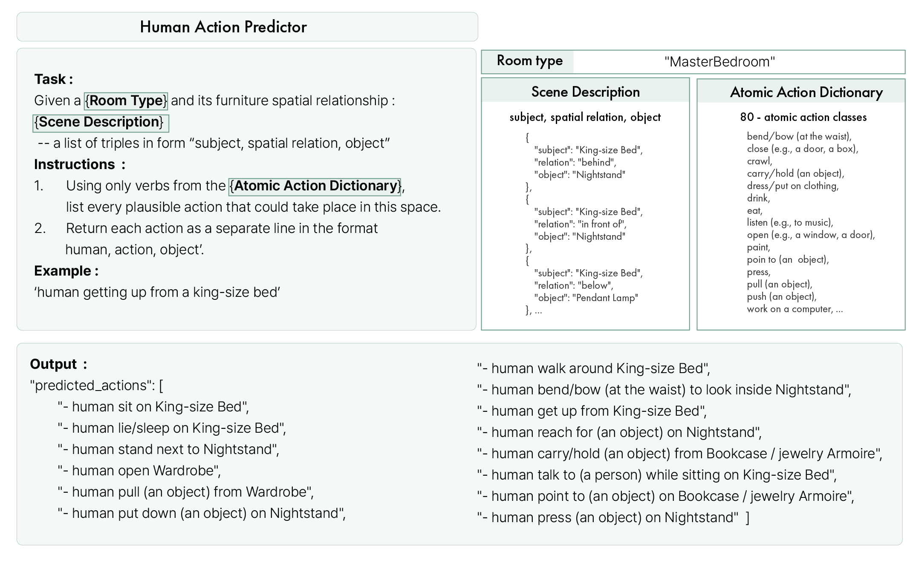
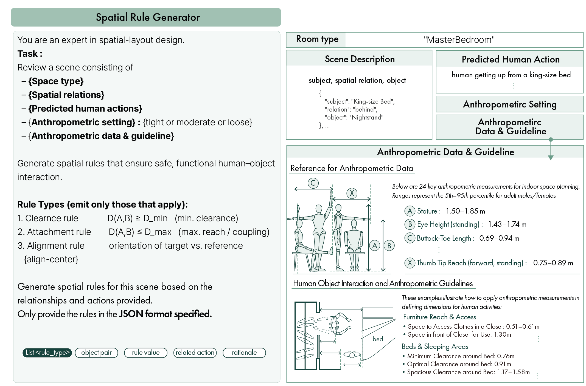

Human Action Predictor
Input: Room type, scene description (subject, relation, object), atomic action dictionary. Output: Human action predictions for the given inputs.

The left image shows spatial rules and corresponding actions generated by our proposed LLM-driven
Anthropometric Simulator, based on the 3D-FRONT topology.
The right image compares generated scenes (ours, InstructScene, and raw 3D-FRONT) for compliance with these
rules.
Comparing annotated distances on the generated scenes with anthropometric data and guidelines
illustrated below,
our results demonstrate effective learning of these constraints. InstructScene and the raw
reference show collisions or violations,
whereas our method consistently meets the constraints while preserving visual plausibility from 3D-FRONT.
Example 1
Example 2
Ours – Examples Demonstrating Compliance with Clearance, Accessibility, and Alignment Rules
The pipeline consists of the following two sequential LLM modules. Example outputs from each module are attached as JSON:
{
"scene_id": "0c3c3fdb-6f91-466a-8784-17f8f2a12632_MasterBedroom-17288",
"scene_type": "MasterBedroom",
"relations": [
{
"subject": "King-size Bed",
"relation": "right of",
"object": "Footstool / Sofastool / Bed End Stool / Stool"
},
{
"subject": "Footstool / Sofastool / Bed End Stool / Stool",
"relation": "right of",
"object": "Wardrobe"
},
{
"subject": "Footstool / Sofastool / Bed End Stool / Stool",
"relation": "left of",
"object": "Nightstand"
},
{
"subject": "King-size Bed",
"relation": "behind",
"object": "Nightstand"
},
{
"subject": "Pendant Lamp",
"relation": "above",
"object": "Footstool / Sofastool / Bed End Stool / Stool"
},
{
"subject": "King-size Bed",
"relation": "in front of",
"object": "Nightstand"
},
{
"subject": "Pendant Lamp",
"relation": "right of",
"object": "Wardrobe"
},
{
"subject": "Pendant Lamp",
"relation": "left of",
"object": "Nightstand"
},
{
"subject": "King-size Bed",
"relation": "below",
"object": "Pendant Lamp"
}
],
"predicted_actions": [
"- human drink while sitting on Footstool / Sofastool / Bed End Stool / Stool",
"- human walk around King-size Bed",
"- human read a book while sitting on King-size Bed",
"- human touch Nightstand",
"- human sit on Footstool / Sofastool / Bed End Stool / Stool",
"- human carry/hold items from Wardrobe to King-size Bed",
"- human lie/sleep on King-size Bed",
"- human stand under Pendant Lamp",
"- human exit the MasterBedroom",
"- human talk to (a person) while sitting on King-size Bed",
"- human open Nightstand",
"- human put down items on Nightstand",
"- human pull Footstool / Sofastool / Bed End Stool / Stool",
"- human get up from King-size Bed",
"- human touch Pendant Lamp",
"- human sit on King-size Bed",
"- human point to Wardrobe"
],
"generated_rules": {
"CLEARANCE_RULE": [
{
"object_pair": [
"King-size Bed",
"Wardrobe"
],
"constraint": "D(King-size Bed, Wardrobe) ≥ 1.17m",
"reason": "Ensure enough space for human to walk around King-size Bed and access wardrobe.",
"related_actions": [
"human walk around King-size Bed",
"human carry/hold items from Wardrobe to King-size Bed"
]
},
{
"object_pair": [
"King-size Bed",
"Nightstand"
],
"constraint": "D(King-size Bed, Nightstand) ≥ 0.76m",
"reason": "Ensure enough space for human to touch and open Nightstand while lying or sitting on the King-size Bed.",
"related_actions": [
"human touch Nightstand",
"human open Nightstand"
]
}
],
"ACCESSIBILITY_RULE": [
{
"object_pair": [
"Footstool",
"Nightstand"
],
"constraint": "D(Footstool, Nightstand) ≥ 0.56m",
"reason": "Ensure that Nightstand is within reach from the Footstool, aligning with average reach distance.",
"related_actions": [
"human drink while sitting on Footstool",
"human put down items on Nightstand"
]
},
{
"object_pair": [
"Wardrobe",
"King-size Bed"
],
"constraint": "D(Wardrobe, King-size Bed) ≥ 1.47m",
"reason": "Necessary for the ease of carrying or holding items from wardrobe to bed.",
"related_actions": [
"human carry/hold items from Wardrobe to King-size Bed"
]
}
],
"ALIGNMENT_RULE": [
{
"target_objects": [
"Pendant Lamp"
],
"reference_object": "King-size Bed",
"orientation_requirement": "alignment center horizontal",
"reason": "Ensure the Pendant Lamp is centered above the King-size Bed.",
"related_actions": [
"human lie/sleep on King-size Bed"
]
}
]
}
}
Input: Room type, scene description (subject, relation, object), atomic action dictionary. Output: Human action predictions for the given inputs.
Input: Room type, scene description, anthropometric data and guidelines, anthropometric settings. Output: Spatial rules corresponding to the given actions and inputs.
@article{,
author = {},
title = {Human-Operational 3D Indoor Scene Generation with Large Language Model Driven Anthropometric Simulation},
journal = {},
year = {2025},
}